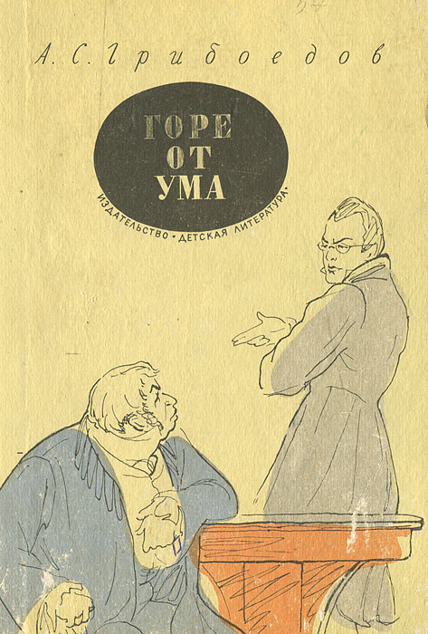

А.С. Грибоедов "Горе от ума"
«Горе от ума» - пьеса в стихах в комедийном жанре, написанная в 1825 году Александром Грибоедовым (издание полного авторского варианта, не урезанного цензорами, произошло только в 1862 году).
Считается первой отечественной реалистической комедией, сочетающей в себе высокую и острую сатиру, злободневность, ловкий и тонкий стихотворный слог, благодаря которому произведение буквально разошлось на цитаты. Первые попытки поставить комедию были предприняты в год её выхода (руководил постановкой автор), постановка не состоялась и была запрещена ввиду острой социальной составляющей. Однако произведение поставили в 1827 году, и с тех пор оно, не теряя актуальности, не уходит из репертуаров театров.
«Горе от ума» имеет огромное значение в русской литературе и как литературное произведение, и как социальное явление. В литературе она стала образцом произведения, созданного на стыке стилей (классицизм, романтизм, сентиментализм, реализм) и гармонично сочетающего их. В культурной жизни – явлением, обличающим лицемерие, праздность, несправедливость, невозможность понимания между людьми различных сословий и поколений, в общем, все пороки светской жизни первой четверти 19 века.
Герои:
Главные герои:
Александр Андреевич Чацкий – главный герой, вокруг которого разворачивается действие. Молодой дворянин, который стремится к просвещению и прогрессу. Вырос в Москве, в доме Фамусова, так как его родители умерли. Чацкий стремился в более прогрессивный Петербург, куда, по-видимому, он уезжал учиться. Умный, острый на язык, но горячий, гордый персонаж (типичный романтический герой, чья функция в произведениях зачастую – противостояние толпе), Чацкий обличает пороки общества, старинные и современные нравы и антиценности дворянского общества, но его мнение остается неразделенным. При создании персонажа Грибоедов пользовался приемом «говорящего имени»: Чацкий от слова «чаять» - надеяться, предчувствовать, испытывать чаяния. В случае Чацкого – неоправданные.
Софья Павловна Фамусова – 17-летняя девушка, дочь Фамусова, выросшая вместе с Чацким (у неё так же, как у Чацкого, не было матери) и бывшая его подругой и возлюбленной. Представительница, как надеялся Чацкий, «века нынешнего», то есть, умная, здравомыслящая, тонкая, но смелая девушка, способная высказывать свою точку зрения и так же, как и Чацкий, противостоять мнению толпы.
Алексей Молчалин – бедный служащий, пробивающий себе дорогу в свет методами прихлебательства, подобострастия и постоянного смиренного молчания. Секретарь Фамусова, живущий в его доме. Влюблен (или, что более вероятно, делает влюбленный вид с целью выйти в зятья знатного человека) в Софью, но от своей природной тупости все свидания проводит в полном молчании.
Павел Афанасьевич Фамусов – типичный представитель «века минувшего», армии «отцов», уверенных в губительном воздействии просвещения на молодые умы. Весь ум Фамусова имеет чисто практическую направленность: знакомство с «нужными» людьми, выгодные вложения, выгодная позиционирование себя в свете, выгодное пристройство дочери за состоятельного человека с чином.
Лиза – служанка в доме Фамусовых, ровесница Софьи и поверенная её любовных тайн. Весьма неглупая особа, знает о тайных свиданиях с Молчалиным и охраняет тайну хозяйки, помогает влюбленным. Хозяин флиртует с Лизой, а девушка влюблена в Петрушку, также служащего в доме Фамусова. С Лизой флиртует и Молчалин, с ней он отнюдь не молчалив, тем самым демонстрируется двуличие персонажа.
Гости на приеме у Фамусова:
Сергей Сергеевич Скалозуб – полковник, гость в доме Фамусовых, еще не старый, с чином, богатый, карьерист и тупой солдафон, заинтересованный лишь в наградах и повышениях. Фамусов, как и Скалозуб, спит и видит, когда Скалозуб получит чин генерала, и тогда он надеется выдать Софью за него замуж.
Репетилов – бывший приятель Чацкого, дворянин и жалкий, лживый, неудачливый карьерист. Завсегдатай балов, несчастливый в браке и не любящий свою семью.
Загорецкий – нестарый дворянин, друг Фамусова, поклонник балов, сплетник, поверхностный, лживый, нечистый на руку.
Хлестова Анфиса Ниловна – тётя Софьи, сестра её покойно матери. Вздорная, злобная старая дева, когда-то бывшая фрейлиной при дворе. Всё домашнее окружение Хлестовой – домашние собаки, заведенные от скуки.
Горичи, Платон Михайлович и Наталья Дмитриевна – довольно молодые дворяне (Платон – друг Чацкого, вероятно, немногим старше его, но также и друг Фамусова), Горич офицер, славившийся своими талантами и силой, но сегодня вся его жизнь – посещение балов, следование за молодой женой.
Тугоуховские – престарелые князь и княгиня. В семье шесть дочек, которых старики регулярно возят с собою всюду в надежде выдать их замуж.
Хрюмины, графиня-бабушка и графиня-внучка – друзья Фамусова. Бабушка молодится, регулярно посещая балы, внучка – старая дева, которая никак не выйдет замуж.
Практически каждый персонаж охарактеризован Грибоедовым с помощью говорящего имени. Фамилия Скалозуба рисует человека, способного скалить зубы лишь над пошлыми солдафонскими шутками; Фамусов – от слова «фамо» - молва, и неслучайно единственное, что его волнует – это мнение света; Молчалин – как безмолвный клещ, выжидающий удобного времени молча действовать – прислуживать, подлизываться, ни в коем случае не противоречить; Репетилов – от слова «повторять», способен лишь, как эхо повторять чужое мнение и т.д.
Сюжет:
Согласно сюжету произведения, в дом дворянина средней руки Фамусова после нескольких лет отсутствия приезжает молодой дворянин Александр Чацкий. Дочь Фамусова, Софья, и Александр выросли вместе, любили друг друга еще с детства, но Чацкий, тянувшийся к знаниям и веяниям свободы, покинул её и уехал в Петербург, внезапно, не обременяя себя перепиской с возлюбленной.
За это время Софья «перестрадала» и теперь влюблена в Алексея Молчалина, секретаря своего отца. Поэтому вернувшегося Чацкого она встречает довольно холодно (хотя и испытывает к нему не только обиду, но и былые чувства).
Чацкий же ехал жениться, но увидев, каков нынешний выбор его подруги, которую он считал девушкой очень умной и утонченной, начинает обличать всех и вся: Софью за глупость в выборе, Молчалина – за прямую тупость и чинопоклонничество, Фамусова – за неспособность понять пользы просвещения, всех его гостей – за лицемерие, двуличность, пустоту, стяжательство и трусость – словом, за все пороки, присущие людям света. В обличительных монологах Чацкий доходит до исступления, но его мало кто понимает, в основном, сочувственно взираю на молодого человека, словно на сумасшедшего (к тому же бывшая возлюбленная пустила слух о его помешательстве). В итоге Чацкий гордо покидает светский раут, а собравшиеся гости по-прежнему не понимают его «бунта свободной личности против действительности».
Краткое содержание по действиям:
Действие I
Раннее утро. Молодая служанка сторожит у двери своей госпожи, она вынуждена спать в креслах, так как обеспечивает безопасность тайного свидания Софьи и Молчалина. Влюбленные в комнате Софьи всю ночь о чем-то беседуют (вернее, как не трудно догадаться, ведет диалог Софья, а Молчалин всю ночь держит её за руку и таращит на неё глаза).
Выходит глава семейства. Лиза переводит часы, которые начинают бить, предупреждая Софью и Молчалина о том, что нужно завершать свидание.
В разговоре Фамусов явно заигрывает с Лизой («бодр и свеж, и дожил до седин, Свободен, вдов, себе я господин»), и когда служанку зовет Софья, Фамусов явно пугается и спешно удаляется. Тем не менее, Фамусов застает Софью и Молчалина, и последний утверждает, что зашел к девушке только что, возвращаясь с ранней прогулки.
Софья и Лиза рассуждают о репутации девушки в свете (быть застигнутой с мужчиной – большая неосторожность, она может обернуться нехорошими слухами, но Софья их не боится), о выгодных партиях. Лиза говорит о полковнике Скалозубе, Софья отзывается о нём с большим презрением: «Он слова умного не выговорил сроду, - Мне все равно, что за него, что в воду…»
Лиза сразу вспоминает самого умного человека, которого когда-либо видела: «Кто так чувствителен, и весел, и остер, Как Александр Андреич Чацкий!» и историю любви Софьи и Чацкого, которая также разворачивалась у неё на глазах.
Внезапно Чацкий появляется на пороге, он очень рад Софье, но удивлен её холодности: «Чуть свет уж на ногах! и я у ваших ног. Ну поцелуйте же, не ждали? говорите!»
Фамусов встречает гостя, Чацкий хвалит похорошевшую Софью, восхищается ею, но Фамусов в ужасе, как бы Чацкий не посватался к Софье:
Теперь... да в полмя из огня:
Тот нищий, этот франт-приятель;
Отъявлен мотом, сорванцом,
Что за комиссия, Создатель,
Быть взрослой дочери отцом!
Действие II
Наконец, после визита домой, Чацкий интересуется у Фамусова, каково его мнение на то, чтобы он посватался к Софье. Фамусов отвечает уклончиво, намекая, что жених хотя бы должен иметь чин, «служить». Чацкий отвечает своей знаменитейшей фразой: «Служить бы рад, прислуживаться тошно». Фамусов рассказывает историю о пользе именно «прислуживания»: его дядя, очень богатый человек, специально падал несколько раз перед императрицей, лишь бы о\развеселить её и быть на виду.
Далее Чацкий разражается не менее знаменитым монологом, в котором сравнивает «век нынешний и век минувший», обвиняя поколение своих отцов в том, что чин для них дороже человека и в вынужденном шутовстве, погоне за чинами таким жалким способом.
Приезжает полковник, возможный кандидат в зятья Фамусова. Фамусов остерегает Чацкого от неосторожных высказываний при полковнике, от вольностей.
В диалоге участвуют трое: Скалозуб рассказывает о своем двоюродном брате, который с большим трудом (при участии самого Скалозуба) продвигался по службе, но внезапно ему это всё надоело, он оставил свет и теперь читает книги ведет поместную жизнь. Фамусов и Скалозуб высказывают презренье тем, кто «не служит», Фамусов намекает, что и Чацкий не служит, и такой образ жизни в свете осуждается. Чацкий заводит монолог со словами «А судьи кто?», говоря, что мнение фамусовского общества, такое закрепощенное в своих предрассудках, отжившее, - для Чацкого ничего не значит.
Молчалин падает с лошади, Софья видит это в окно и при всех падает в обморок, компрометируя обоих. Чацкий понимает, что сердце Софьи занято именно Молчалиным, а Лиза советует Софье пококетничать с Чацким, чтобы слухи, вызванные её обмороком, прекратились, и подозрение от Молчалина было отведено.
Молчалин остается наедине с Лизой и начинает заигрывать с ней, предлагая подарки.
Действие III
В доме Фамусова готовятся к балу. Приезжают гости, влиятельные московские дворяне. Молчалин демонстрирует свое кредо – быть милым даже «с собакой дворника», он восхищается псом Хлёстовой, и Чацкий его высмеивает.
Софья размышляет о Чацком, она видит, что он гордый, озлобленный, но в глубине души только она одна и может его понять, разделить его мысли. Ненавидя его за его правоту, Софья пускает слух, что Чацкий «не в уме», и вскоре все гости узнают, что Чацкий сумасшедший, приписывают ему в итоге алкоголизм: «В его лета с ума спрыгнул!/Чай, пил не по летам», полное помешательство: «с безумных глаз/Затеет драться он!...», а при его появлении отшатываются от него.
Чацкий произносит монолог, в котором говорит, что в Москве он несчастлив, ему не уютно среди этих людей, среди смеси «французского с нижегородским», среди засилья всего иностранного. Гости не обращают на Чацкого внимания – играют в карты и танцуют.
Действие IV
Бал заканчивается, гости собираются уезжать. Чацкий видит, что его считают помешанным.
Софья видит заигрывание Молчалина с Лизой («Зачем она не ты!»), её сердце разбито, и, видя, что Молчалин ухаживает за ней лишь в надежде выгодно жениться и получить продвижение в карьере, она отталкивает Молчалина и приказывает выехать из дома, иначе отец всё узнает.
Приходит Чацкий, и укоряет Софью в том, что предпочла ему жалкого подлеца, вошедший Фамусов неожиданно застает разговор дочери с Чацким и удивлен видеть их вместе, ведь она «сама его безумным называла» - так Чацкий понимает, кто был источником слухов.
Фамусов думает, что раскрыл любовную связь, он негодует, что слуги не уберегли репутацию его дочери, ругает Софью и грозится отослать её «в деревню, к тетке, в глушь, в Саратов».
Чацкий произносит финальный диалог: «Слепец! я в ком искал награду всех трудов! /Спешил!.. летел! дрожал! вот счастье, думал, близко…» В фамусовском мире ему не место, и он собирается покинуть Москву навсегда («Карету мне, карету!»). Фамусов в финале думает лишь о том, какое мнение о нём и его семье у всего света будет назавтра.
Крылатые фразы
| № | Крылатое выражение | Персонаж | Действие | Явление |
| 1. | Ей сна нет от французских книг, А мне от русских больно спится. | Фамусов | 1 | 2 |
| 2. | Минуй нас пуще всех печалей И барский гнев, и барская любовь. | Лиза | 1 | 2 |
| 3. | Счастливые часов не наблюдают. | София | 1 | 3 |
| 4. | Бывают странны сны, а наяву страннее. | Фамусов | 1 | 4 |
| 5. | Кто беден, тот тебе не пара. | Фамусов | 1 | 4 |
| 6. | Нельзя ли для прогулок Подальше выбрать закоулок. | Фамусов | 1 | 4 |
| 7. | Подписано, так с плеч долой. | Фамусов | 1 | 4 |
| 8. | Шел в комнату, попал в другую. | София | 1 | 4 |
| 9. | Грех не беда, молва не хороша. | Лиза | 1 | 5 |
| 10. | Мне всё равно, что за него, что в воду. | София | 1 | 5 |
| 11. | А впрочем, он дойдет до степеней известных. | Чацкий | 1 | 7 |
| 12. | Блажен, кто верует, — тепло ему на свете! | Чацкий | 1 | 7 |
| 13. | Велите ж мне в огонь: пойду как на обед. | Чацкий | 1 | 7 |
| 14. | Где ж лучше? Где нас нет. | София, Чацкий | 1 | 7 |
| 15. | Господствует ещё смешенье языков: Французского с нижегородским? | Чацкий | 1 | 7 |
| 16. | И дым Отечества нам сладок и приятен! | Чацкий | 1 | 7 |
| 17. | Числом поболее, ценою подешевле. | Чацкий | 1 | 7 |
| 18. | Что за комиссия, создатель, Быть взрослой дочери отцом! | Фамусов | 1 | 10 |
| 19. | Век нынешний и век минувший | Чацкий | 2 | 2 |
| 20. | Свежо предание, а верится с трудом. | Чацкий | 2 | 2 |
| 21. | Служить бы рад, прислуживаться тошно. | Чацкий | 2 | 2 |
| 22. | Что говорит! и говорит, как пишет! | Фамусов | 2 | 2 |
| 23. | Ах! тот скажи любви конец, Кто на три года вдаль уедет. | Чацкий | 2 | 4 |
| 24. | Времен Очаковских и покоренья Крыма. | Чацкий | 2 | 5 |
| 25. | Где, укажите нам, отечества отцы, Которых мы должны принять за образцы? | Чацкий | 2 | 5 |
| 26. | Дверь отперта для званных и незванных | Фамусов | 2 | 5 |
| 27. | Дома новы, но предрассудки стары. | Чацкий | 2 | 5 |
| 28. | Ну как не порадеть родному человечку!.. | Фамусов | 2 | 5 |
| 29. | Кричали женщины: ура! И в воздух чепчики бросали! | Чацкий | 2 | 5 |
| 30. | На всех московских есть особый отпечаток. | Фамусов | 2 | 5 |
| 31. | Поспорят, пошумят, и... разойдутся. | Фамусов | 2 | 5 |
| 32. | Ах, злые языки страшнее пистолетов. | Молчалин | 2 | 11 |
| 33. | Герой… Не моего романа. | Чацкий, София | 3 | 1 |
| 34. | Я странен; а не странен кто ж? | Чацкий | 3 | 1 |
| 35. | А смешивать два эти ремесла Есть тьма искусников, я не из их числа. | Чацкий | 3 | 3 |
| 36. | В мои лета не должно сметь Свое суждение иметь. | Молчалин | 3 | 3 |
| 37. | Всё врут календари. | Хлестова | 3 | 21 |
| 38. | А книги сохранят так: для больших оказий. | Скалозуб | 3 | 21 |
| 39. | Ученье — вот чума; ученость — вот причина. | Фамусов | 3 | 21 |
| 40. | Влеченье, род недуга. | Репетилов | 4 | 4 |
| 41. | Да умный человек не может быть не плутом. | Репетилов | 4 | 4 |
| 42. | Есть от чего в отчаянье придти. | Чацкий | 4 | 4 |
| 43. | Послушай! ври, да знай же меру. | Чацкий | 4 | 4 |
| 44. | Поверили глупцы, другим передают, Старухи вмиг тревогу бьют - И вот общественное мненье! | Чацкий | 4 | 10 |
| 45. | Молчалины блаженствуют на свете! | Чацкий | 4 | 13 |
| 46. | Ба! знакомые все лица! | Фамусов | 4 | 14 |
| 47. | В деревню, к тётке, в глушь, в Саратов. | Фамусов | 4 | 14 |
| 48. | Где оскорбленному есть чувству уголок! | Чацкий | 4 | 14 |
| 49. | Сюда я больше не ездок. | Чацкий | 4 | 14 |
| 50. | Карету мне! Карету! | Чацкий | 4 | 14 |